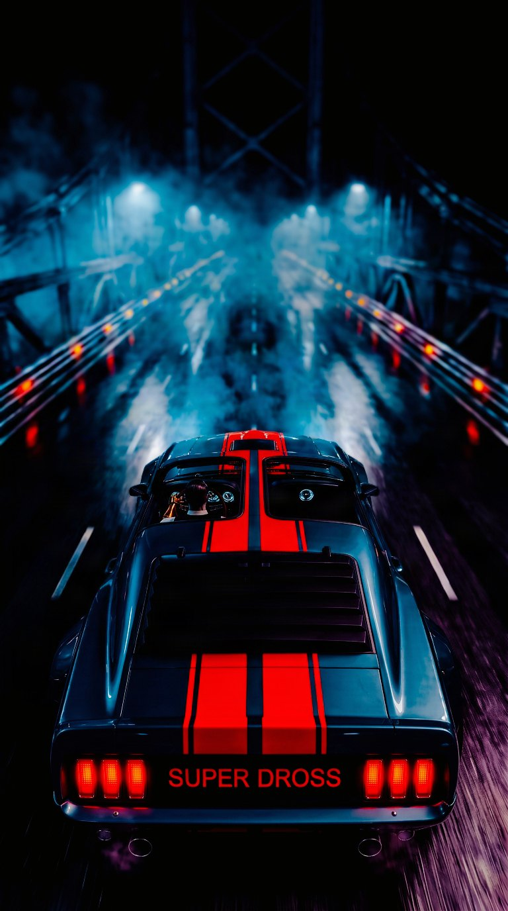
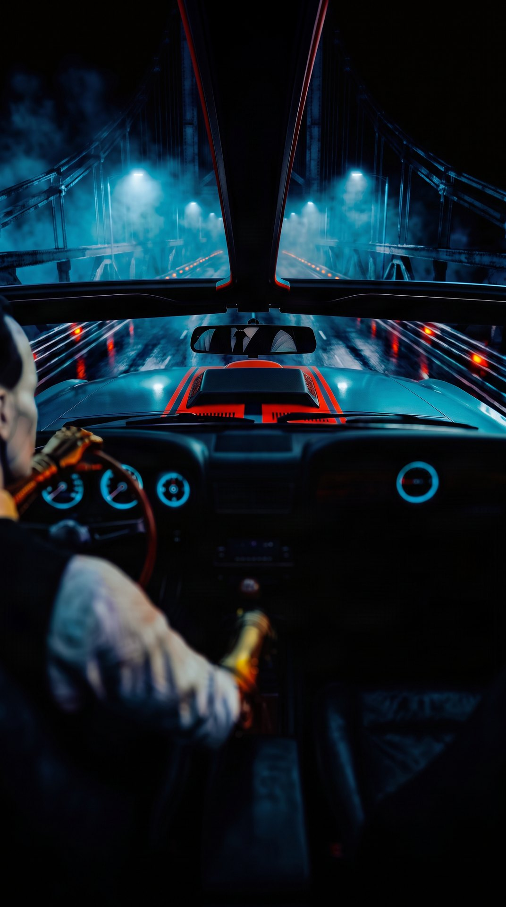
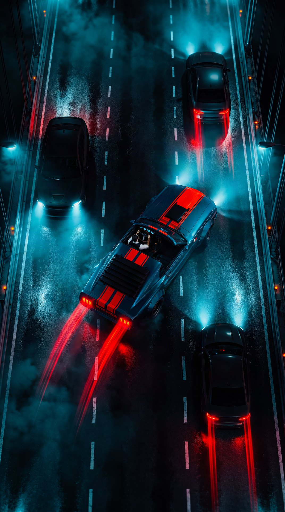
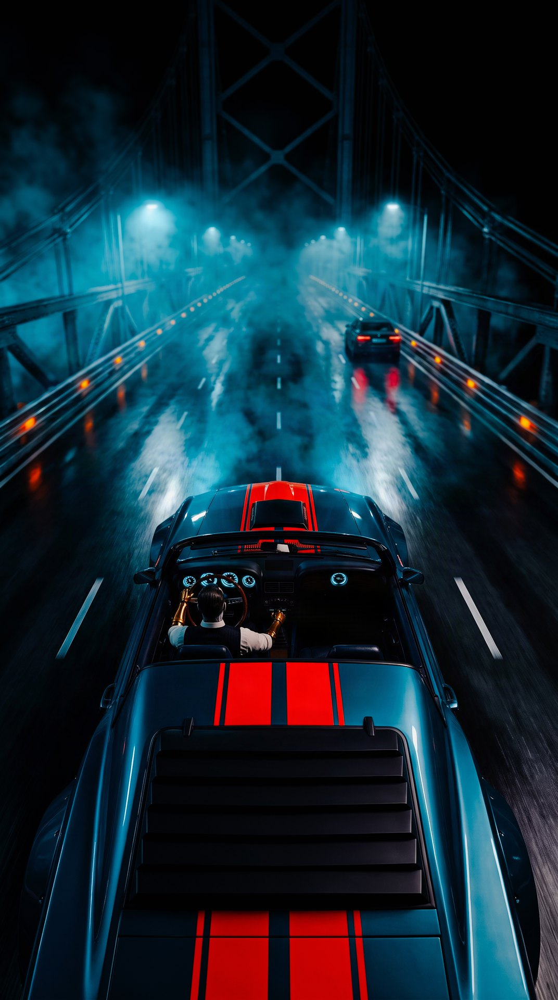

RINDER-FILE 2026-11-21-04 // SUPER DROSS 1, COMMUTER SEDAN 0
AREA 33: RINDERSIN, NEVADA // EPISODE 04
GRANNY THEFT JAX 21067
7:15 AM MOM WAKE-UP CALL // BANANA ROLL-CAGE // FIRE IN THE SKY // STARGATE THROUGH THE LOUVERS
All we asked for was one clean 90-degree god's-eye bridge weave. Instead, Omni turned Super Dross into a 1997 Grand Theft Auto 1 battering ram that deliberately hip-checked an innocent commuter sedan into a steel bridge girder at 00:03 with full *CRUNCH-BANG!* audio (waking Mom up laughing at 7:15 AM). From there, a 200-word "all-you-could-eat salad bowl" prompt accidentally converted Super Dross into a convertible and a banana roll-cage, Firefly abducted Jax straight into Fire in the Sky as Travis Walton, and two surgical reference-locked bookend passes finally breached straight through the rear window louvers like a Stargate into full cockpit symmetry.
3 SINS -> STARGATE BREACHED4 PLAYABLE VIDEO TAKES6 GRADED 9X16 PLATES📋 3 OPEN-SOURCE PROMPTS
SINS: 003 *DING!*3 BRIDGE FELONIES PENDING // REDEEM TO BREACH THE STARGATE
Act 00 (Establishing Bridge Master): Super Dross Tearing Left-to-Right Across the Suspension Bridge
Before the bridge turned into a felony demolition derby, this 7.92-second side-profile tracking master established the entire bridge environment: Jax silhouetted inside the open T-top tearing across rain-slicked black asphalt beneath riveted dark steel bridge trusses, backlit cyan fog, and blazing red taillight streaks. Next mission: pull straight up to a 90-degree god's-eye overhead angle and weave cleanly through four lanes of bridge traffic. What could possibly go wrong?
Act 01 (RenderSin #01): Granny Theft Jax (The 7:15 AM Mom Wake-Up Call)
> MATTHEW: "Yes Im pretty sure I just woke up mom laughng... ok I'm back, woke up mom lol"
Watch this with SOUND ON. Omni read "threads cleanly between the two slower right-lane cars" and translated it straight into 1997 Grand Theft Auto 1 felony dashcam footage. Even though Jax has a completely empty, wide-open center lane, at 00:02 he yanks the steering wheel hard right for zero reason and deliberately hip-checks an innocent commuter sedan straight into the steel bridge girder with a full Hollywood *CRUNCH-BANG!* collision baked into the audio track.
Window
What Omni Actually Did
QA Verdict
00:00.0 - 00:01.5
Launches dead-center down the wet bridge while a lunatic in the left lane casually drives the wrong way toward Jax.
PASS
00:02.0 - 00:03.0
Jax ditches his empty lane, hooks hard right, and straight-up body-checks the lead right-lane sedan into the steel girder (*CRUNCH-BANG!*).
VEHICULAR ASSAULT
00:03.5 - 00:04.5
Super Dross slides casually across the crushed sedan's nose at 45 degrees with 0% paint damage while the trailing driver rethinks their commute.
COMEDY GOLD
00:05.0 - 00:06.5
Jax counter-steers back between the dashed lines, drops the hammer on the big-block V8, and flees the scene with an instant 2-star wanted level.
> MATTHEW: "Now that I finally got done arguing about the fact that we don't need to fucking argue about not arguing about arguing, I finally got this plate done... we need a consistent roof line so people don't think it's a different car... the issue with those was you gave me an all-you-could-eat salad bowl for the prompt... So let's pivot since the t-bar run a foul bwhahahahahaha, Let's crane down to the Super Dross logo on the trunk"

Pivoting to a locked Firefly End Plate (wawys-sd-traffic-swoop-a) hit a hilarious triple-layer geometry snare: first, a 200-word "all-you-could-eat salad bowl" prompt overloaded with 5 competing references starved Firefly's attention and accidentally turned Super Dross into a roof-free convertible; second, adding the T-bar back initially dropped the molten-orange center stripe; third, trying to flatten the raised spline on swoop-b morphed the roof bar into a custom banana roll-cage!
// THE "NO SALAD KIT" HOUSE STANDARD
Cut Reference Bloat (`5 -> 2`): When 4 or 5 reference images are loaded in Firefly, they already carry lighting, bridge, and palette; piling paragraphs on top causes instant token dilution.
Pure-Protein Surgical Edits: Stripping the prompt down to 2 references + 2 sentences locked the twin molten-orange T-bar stripes cleanly onto swoop-a and birthed the squared-up rear target plate wawys-sd-traffic-swoop-b-no-salad-kit.
Act 03 (RenderWin #01): The Bridge Swoop Drop onto the Squared "SUPER DROSS" Tail Panel
Pairing wawys-sd-traffic-swoop-a (Start) with wawys-sd-traffic-swoop-b-no-salad-kit (End) under strict Rinderfiles Law 3 (saying "the viewpoint drops smoothly straight down" with zero `camera`/`crane`/`rig` words) executed a butter-smooth descent past the right-lane sedan directly behind the matte-black rear louvers onto the glowing triple-bar taillights and razor-sharp SUPER DROSS lettering. Snapping the clean frame at 00:03.0 turned those rear louver slats into a dead-straight launchpad for the Stargate plunge.
ACT 04 // SIN #03 // FIRE IN THE SKY (TRAVIS WALTON ABDUCTION)
Act 04 (RenderSin #03): "Fire in the Sky" (Firefly Turns Jax into Travis Walton)
> MATTHEW: "I feel like firefly turned Jax into Travis Walton so maybe we should just prompt a new plate 😂😂😂"

Attempting a quick background-swap edit on the legacy wawys-plate to build the cockpit landing plate for the louver punch went straight 1993 alien-abduction horror: a smeared grey Travis Walton profile clinging to the left frame margin, twin glowing cyan tractor beams pouring straight down through the open T-top, and a mysterious headless suit-and-tie riding shotgun inside the rearview mirror.
// OPTICAL ROOT CAUSE & FIX
Inherited Shallow-DOF Smear: The legacy plate threw Jax into heavy foreground bokeh on the left edge, so Firefly melted his face while nailing the bridge swap.
Clean Deep-Focus Reset: Dropping the legacy plate completely and generating fresh from 3 sharp references produced wawys-sd-traffic-swoop-stargate-style: zero abduction artifacts, crisp temple seams, segmented neck rings, and dead-center T-bar alignment.
ACT 05 // GRAND FINALE // RENDERWIN #02 // JAX'S BOOTGATE1080X1920 // 24FPS // 7.00S // STARGATE THROUGH THE LOUVERS
Act 05 (Grand Finale): Jax's Bootgate (Stargate Plunge Straight Through the Rear Window Louvers)
> MATTHEW: "Alright! Let's Stargate those louvers at the 0:03 mark!... Let's show the peeps! Thanks heaps!"
Flow took the Stargate brief literally and threaded the needle straight through the back glass without a single warped gauge or banana T-bar in sight. Starting dead-center behind the SUPER DROSS trunk panel, the viewpoint rockets up the molten-orange stripes, punches straight between the horizontal matte-black louver slats at 00:01.5 synced to an air-pressure whoosh, and pops straight between the leather front seats into full cockpit symmetry behind Jax!
Window
Execution Read
QA Verdict
00:00.0 - 00:01.0
Locks squarely behind the SUPER DROSS fascia and triple-bar taillights at full bridge velocity, then rockets up the molten-orange trunk stripes.
PASS
00:01.5
Clean Stargate breach straight through the horizontal louver slats: glowing cyan dash rings and Jax peek dead-center between the bars with a punchy air-pressure whoosh.
MONEY SHOT
00:02.0 - 00:03.5
Pops cleanly between the leather front seats into full cockpit symmetry: temple seam, segmented neck rings, brass hands, 3+1 cyan gauges, plus a brief reflection of Jax's eyes in the rearview mirror on the V8 upshift.
HERO LOCK
00:04.0 - 00:06.5
Settles rock-steady on the centered matte-black T-top spine while orange rail dots, cyan lamps in teal fog, and the steel X-brace tower with twin red beacons rush ahead under a crushed #000000 sky.
PASS
// PREMIERE PRO ZERO-HESITATION SPLICE NOTE
Bridge-to-Cockpit Plunge Seam: Trim 8-12 frames off the head (00:00.0 - 00:00.4) of wawys-jaxs-bootgate where the perspective eases out of the rear lock, and butt it directly onto the 00:03.0 tail of wawys-bridge-swoop-a so momentum never stalls on the bridge.
The Exact Open-Source Prompts Behind the Bridge Swoop & Stargate Louver Breach
PROMPT 01 // PURE-PROTEIN T-BAR PAINT PASS (2 REFS ONLY - NO SALAD BOWL)
Paint the twin molten-orange racing stripes continuously down the full length of the center T-top roof bar and top center windshield header so they bridge the rear deck stripes straight into the hood stripes, separated by a thin petrol-teal center pinstripe matching the reference car. Keep Jax, the open roof cutouts, the car body, and the bridge completely unchanged.
PROMPT 02 // OMNI BRIDGE SWOOP DROP-AND-LOCK (ZERO CRANE/RIG TOKENS)
Frame 0 begins already at redline velocity in the high-rear chase perspective directly behind the petrol-teal open T-top muscle car blasting straight down the rain-slicked nocturnal steel suspension bridge. The viewpoint drops smoothly straight down behind the matte-black rear fastback louvers, keeping Jax's slicked-back head, brass left hand on the wheel, and glowing cyan dash silhouette visible through the open left T-top cutout and louver gaps as the angle pitches level to square up dead-center behind the rear trunk fascia. Once squared and centered, the perspective locks tightly onto the crisp bright red-orange "SUPER DROSS" lettering across the matte-black rear panel and glowing triple-bar red taillights, pacing the wide-body rear fenders steadily for the final seconds with subtle high-RPM vibration. Wet black asphalt, dashed white lane lines, glowing cyan mist, overhanging electric cyan streetlights, and warm orange guardrail markers streak rapidly backward past both flanks beneath the towering dark steel X-brace tower and pure #000000 night sky at 24fps, sustaining relentless highway velocity to the final frame.
PROMPT 03 // JAX'S BOOTGATE: STARGATE THROUGH THE LOUVERS (720P BOOKEND)
Frame 0 begins already at redline velocity squared dead-center behind the SUPER DROSS rear fascia on the rain-slicked nocturnal steel suspension bridge. Immediately, the viewpoint launches forward in one rapid, unbroken Stargate plunge, accelerating straight up the twin molten-orange trunk stripes and punching cleanly straight through the horizontal matte-black rear louver slats as they streak past the frame edges. Emerging between the dark leather front seats at full speed, the plunge locks dead-center inside the cockpit behind Jax on the left, revealing his segmented metallic neck rings, brass hands gripping the wood steering wheel and floor shifter, glowing electric cyan dashboard gauges, centered rearview mirror, striped petrol-teal hood, and rigid matte-black center T-top spine overhead. Outside the windshield and open T-top cutouts, wet black lanes, warm orange guardrail dots, overhanging cyan streetlights in glowing teal mist, and the dark steel X-brace tower rush relentlessly forward beneath a pure #000000 night sky at 24fps with subtle high-RPM vibration.
EPISODE 04 ASSET VAULT // 6 GRADED 9X16 BRIDGE & STARGATE PLATESCLICK ANY PLATE TO INSPECT FULL-SIZE
The Six 9x16 Bridge, Evidence & Stargate Plates
PLATE 01 // GOD'S-EYE

wawys-sd-traffic-np
The 90-degree top-down launch plate that unleashed Granny Theft Jax.
PLATE 02 // SWOOP A

wawys-sd-traffic-swoop-a
High-rear bridge chase anchor before restoring the striped T-bar spine.
PLATE 03 // NO SALAD KIT
swoop-b-no-salad-kit
Squared-up rear badge End Plate with canon painted T-bar and Jax behind the wheel.